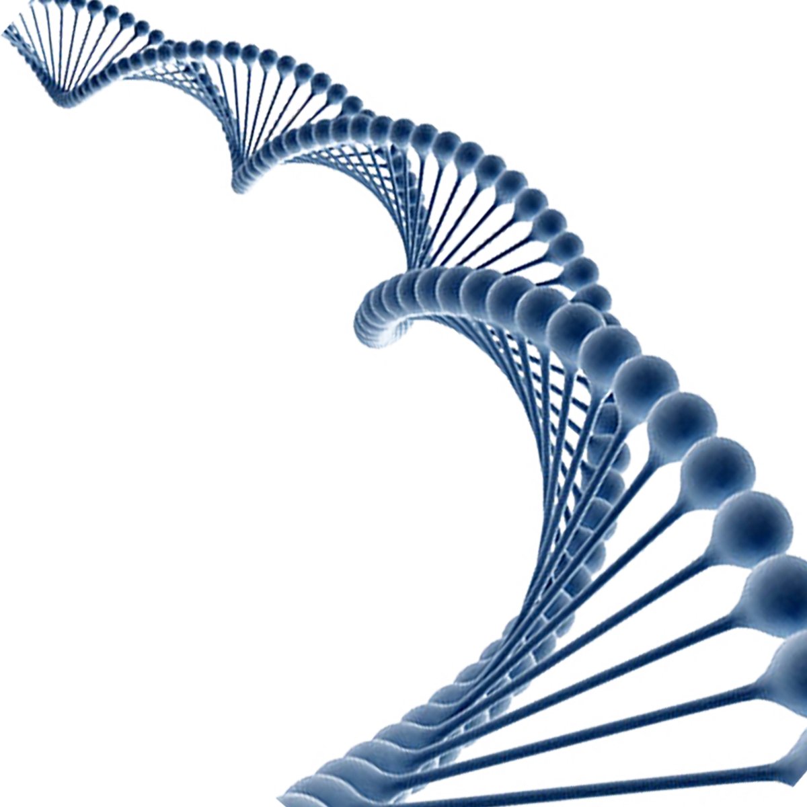

Once a person decides to proceed with genetic testing, a health care provider can arrange testing. Genetic testing is often done as part of a genetic consultation.
Genetic tests are performed on a sample of blood, hair, skin, amniotic fluid (the fluid that surrounds a fetus during pregnancy), or other tissue. For example, a procedure called a buccal smear uses a small brush or cotton swab to collect a sample of cells from the inside surface of the cheek. The sample is sent to a laboratory where technicians look for specific changes in chromosomes, DNA, or proteins, depending on the suspected disorder. The laboratory reports the test results in writing to a person's doctor or genetic counselor, or directly to the patient if requested.
Newborn screening tests are done on a small blood sample, which is taken by pricking the baby's heel. Unlike other types of genetic testing, a parent will usually only receive the result if it is positive. If the test result is positive, additional testing is needed to determine whether the baby has a genetic disorder.
Before a person has a genetic test, it is important to understand the testing procedure, the benefits and limitations of the test, and the possible consequences of the test results. The process of educating a person about the test and obtaining permission is called informed consent.

Individuals interested in direct-to-consumer genetic testing do not need to go through a health care provider to obtain a test, but they can get it directly from the testing company. After undergoing direct-to-consumer genetic testing, people who test positive for a condition or are found to be at higher risk of developing a disorder are encouraged to follow-up with a genetic counselor or other health care provider.